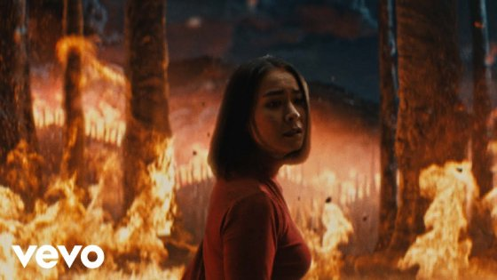
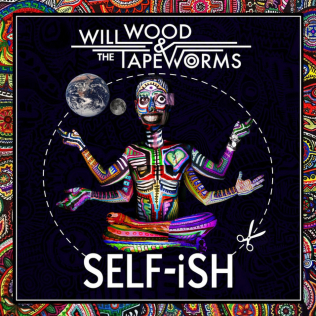

these are a few [musical] artists that inspire me visually!
MITSKI

Mitski is a very talented musical artist, but her most recent three albums [Laurel Hell, The Land Is Inhospitible And So Are We, and Nothing's About To Happen To Me] have all been so visually striking, I had to note her as an inspiration of my visual design style.
you can find her music and more at her website, linked here!
[make sure to drag the wallpaper in the background! it tears :D]
WILL WOOD AND THE TAPEWORMS

Will Wood's aesthetic has always been a favorite of mine, with his vibrant messy colors and realistic imagery painted over with patterns. I especially love his album cover for Self-Ish. The crisp colors paired with the crude imagery makes me happy.
Underscores' music videos are a visual favorite again, but I am especially drawn to her album 'U'. The song Tell Me "U Want It" has a very fun and fast paced music video, filmed on a phone with striking motion blurs and shaky cameras. I love her messy imagery.
you can find her music on her very neatly organized and great example of pathways website, linked here!
my reflection
I learnt a lot of very fun CSS commands and how to color and resize text! This was a lot of fun for me!
While working with the img paths, I realized the reason they wouldn't load was because of a setting that put me in restricted mode. That was hard to figure out, but once my images finally loaded in I felt truly alive.